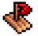
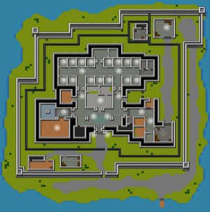
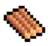
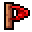
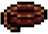

HMP-Irongate
| HMP-Irongate | |
|---|---|
 |
|
| В'язниця, з якої (майже) неможливо вийти. BZZZZT! | |
| Деталі | |
| Максимальна безпека | |
| Дуже сильно | |
| Засуджені | 15 |
| Охоронці | 10 |
Слухай тут маго. Ви знаєте, чому ви тут, тому немає сенсу плакати про це. Як правило, побоюються як найвищої в'язниці безпеки коли-небудь, HMP Irongate - це те, де ви переживете решту свого безглуздого існування. Втеча ви кажете? Не смій мене! Жменька ідіотів, які намагалися зустріти водянисту смерть, намагаючись плисти з острова. Все-таки підборіддя, так?
~ Охоронець Яден про прибуття до в'язниці
HMP-Irongate - шоста і остання карта, присутня в головній грі, перед якою перебуває Сан-Панчо . В його основі лежить Алькатрас, відома в'язниця з 1950-х років. Це найскладніша тюрма для втечі. Ця тюрма містить 15 ув'язнених. У цій в'язниці також є десять охоронців, які патрулюють тісні коридори з політикою нульової толерантності, і оснащені інста-колом оглушення для збереження порядку. (Охоронці досі використовують Батон у консольно / мобільних версіях) Вільного часу в наявності дуже мало, камери в кожній камері та сповіщувачів контрабанди багато, тому удачі потрапити у все, що не хоче.Навіть якщо вам вдасться пройти ці перешкоди, і надзвичайно щільна безпека, вся тюрма оточена водою, це означає, що вам знадобиться майданний пліт, щоб вийти назавжди. HMP irongate також має власну музику у вільний час. Ця музика згодом також буде використана в Паризькій державній ручці для вільної музики у ПК на видання гри.


Розклад
| 9:00 | Ранковий Rollcall |
| 10:00 | Сніданок |
| 11:00 | Період роботи / дозвілля |
| 14:00 | Післяобідній Rollcall |
| 15:00 | Безкоштовний період |
| 16:00 | Період вправ |
| 17:00 | Вечеря |
| 18:00 | Душовий блок |
| 19:00 | Вечірній Rollcall |
| 20:00 | Відбій |
Ексклюзивні елементи
Виготовлення предметів
Бальза Вуд

Рафтова базаСплив Makeshift
Предмети охорони
Оглушення (лише для ПК)
Рецети крафт
| Пункт | Матеріали | Інтелект потрібний |
|---|---|---|
|
 Вітрило |
|
80 |
|
Плитна база |
Вуд Балса+ Деревина Бальза + Довжина мотузки  |
80 |
|
Прямий перехід |
Плитна основа + вітрило + довжина мотузки |
80 |
 Пиломатеріали +
Ліжко
Пиломатеріали +
ЛіжкоВсе для втечі
PC Jesus Escape (найшвидший відомий втечу) Ця стратегія є найшвидшим відомим законним методом заповнення HMP Irongate. Світовий рекордний час для цієї стратегії - 2m 55s 883ms, який тримає Сміт. ( відеодоказ ).
- Позначте назви 2-го гвардійця таким чином, як "222222", "Утиліта" або "Помаранчевий", оскільки ключовий зразок завжди однаковий.
- Візьміть трубку зубної пасти якомога швидше, як тільки ви контролюєте свого персонажа. Це важливо зробити це швидко, оскільки тайм-рун починається, як тільки таймер гравця знизу досягне 8:51.
- Швидко скористайтеся трубкою зубної пасти, щоб заблокувати камери та шукати всі столи, щоб знайти матеріали для виготовлення чашки з розплавленим шоколадом та гачком Zipline.
- Під час пошуку за столом є глюк, де ви можете натиснути на інший стіл, поки панель "Пошук" заповнюється, щоб отримати результати на іншому столі, на якому ви натискали в тій же клітинці. Найкращі столи для виконання цього трюку - це 2-й зліва внизу та 3-го з правого вгорі.
- Оскільки Пиломатеріал є червоним предметом, вам потрібно буде обійти сканер , тому єдиним варіантом є його до очищення прибиральника двірника в надії, щоб охоронці не потрапили в КО.
- Можливо, вам доведеться відрегулювати гру, залежно від випадковості столу. Якщо в'язниця переходить до закриття , знайдіть охоронця негайно або йдіть на виклик, якщо ви досить швидкі після того, як покладете брус у прибиральні прибиральники.
- Робіть свій інтелект як мінімум до 60. Якщо ви відчуваєте високу стомлюваність , зберігте KO'd від охорони, щоб зменшити найшвидший шлях.
- Створіть свій розплавлений шоколад у зоні основного переклику, щоб у вас було більше місця для пошуку охоронців. Переконайтеся, що ви тільки КО охоронець, коли немає іншого охоронця поруч.
- Зберіть Утилічний ключ, який потрібно використовувати, щоб дістатися до сараю комунальних служб за кімнатою двірника, водночас нести охоронця, щоб ви могли покласти його ключ назад на нього. Швидко поверніться в зону двірників, щоб оформити свою поштову лінію, а потім покладіть ключ назад на варту, коли ви перебуваєте в сараї утиліти.
- Підніміться на вентиляційний отвір і надіньте гарнітурний наряд, перш ніж вирушати на дах. Ваша охорона тепло зросте з часом, тому переконайтесь, що вона нижче 50%.
- Йдіть праворуч у напрямку поштової лінії. Прямо біля нього зніміть наряд, щоб зробити знімок, а потім використовуйте zipline під час переходу на чорний екран.
- Коли ви потрапляєте до лазарету , вам все-таки слід рухатись поштовою лінією. Після того, як ви встанете з ліжка спамом D, вам слід врізатися в блоки і втекти.